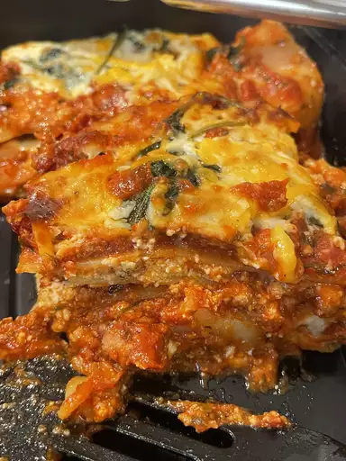

<main>
    <h1>Beef Lasagna</h1>

        

        <h2>Description</h2>
             <p>This lasagna recipe takes a little work, but it is so
                satisfying and filling that it's worth it</p>

                <h3>Ingredients</h3>
                <ul>
                    <li>Meat</li>
                    <li>Onion and garlic</li>
                    <li>Tomato products</li>
                </ul>

                <h3>Steps</h3>
                <ol>
                    <li>Make the meat sauce.</li>
                    <li>Cook the noodles.</li>
                    <li>Make the ricotta mixture.</li>
                </ol>
</main>